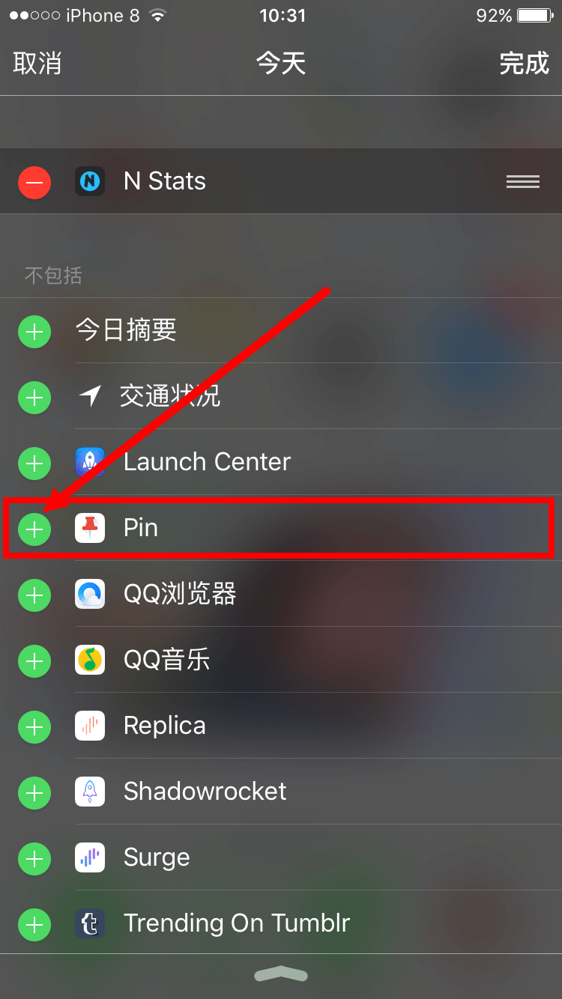
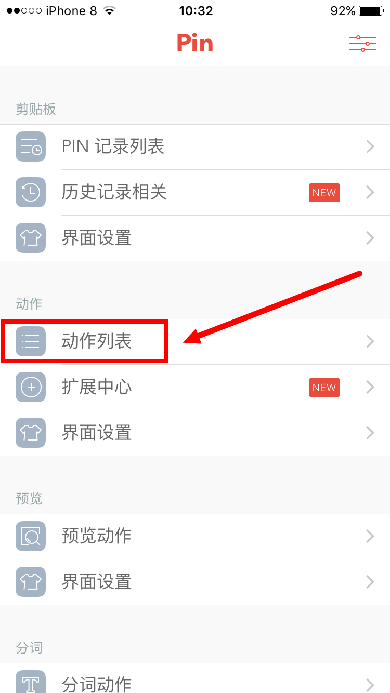
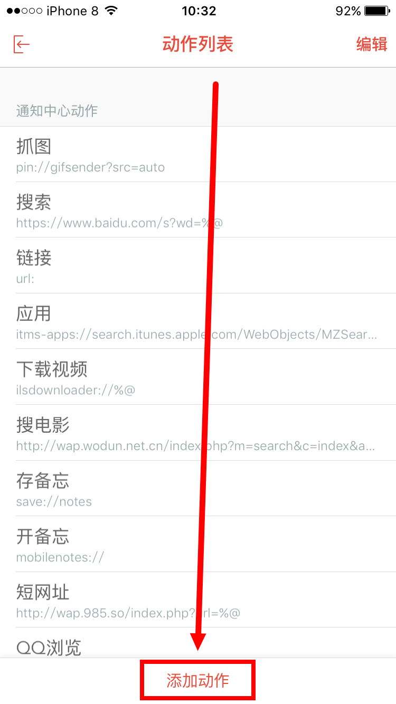
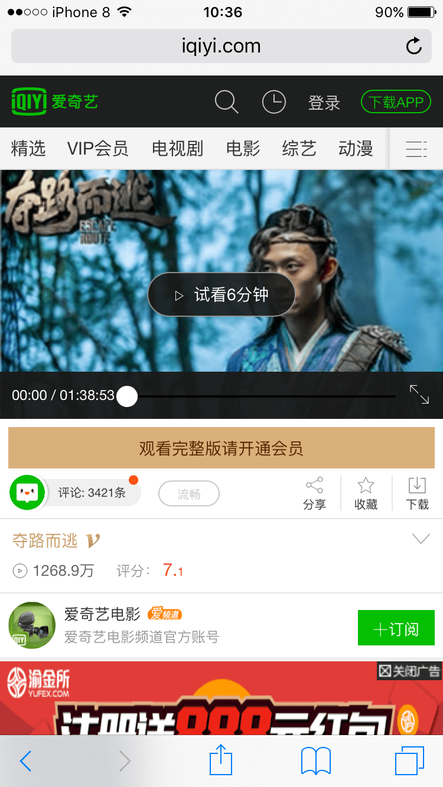

手机免费观看各大视频网站的vip视频方法
首先看看使用方法演示视频效果。
下面配置教程正式开始!
1.下载软件 <Pin - 剪贴板扩展>并安装。

2.下拉通知中心-点编辑。

3.找到- Pin -点击加号。

4.回到主页打开刚刚下载安装好的 Pin 这个软件 点击动作列表。

5.点击-添加动作。

6.输入标题【看VIP视频】，后点击-模式。

7.在自定义栏粘贴解析地址，后返回。

解析地址： https://yun.odflv.com/?url=%@
最新解析接口发布网站： https://ae85.cn/jxjk.html
下面图文使用方法教程。
1.用Safari浏览器打开视频网站，如爱奇艺： http://m.iqiyi.com/vip/ 选择你要看的VIP视频。

2.在地址栏，选择地址并拷贝。

3.下拉通知中心-点你刚刚添加的【看VIP视频】。

4.就会自动跳转到看视频界面。

5.尽情的享受VIP视频吧。
如有问题可以加我微信：【84088289】也可以扫描下面二维码

下载VIP视频以及其他技术和活动，请扫描上面二维码加为好友，拉你入群。